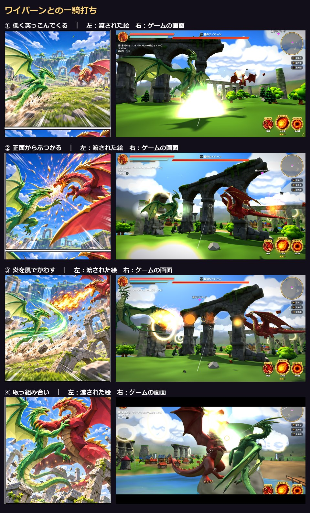
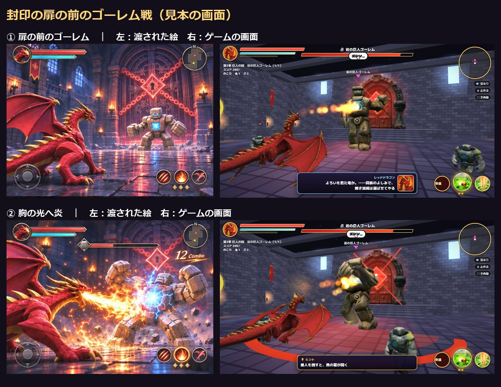
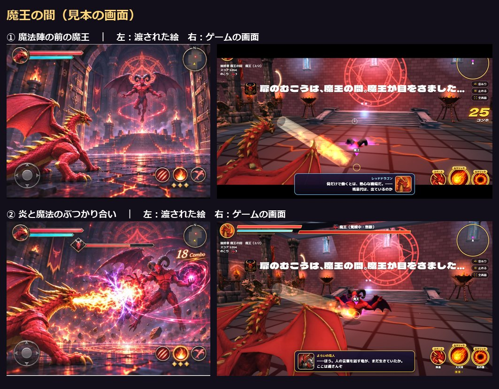

渡された絵 と ゲーム画面の見比べ
2026年11月15日 版 1116aax （左：渡された絵 右：ゲームの画面）
結論：11/15 の直し（谷の景色・ゴーレム・疾走感・王都・洞窟・シナリオ1のカメラ）を入れた今のゲームで、表紙の4コマと迷宮・ゴーレム・魔王・ワイバーンの衝突の絵を撮り直しました。谷の山とがけ、ゴーレムの青い光、速く飛ぶ筋、王都の明るさは絵に近づきました。洞窟と一部のワイバーンの絵は、撮り直すと前より悪かったので前のままです。まだ届いていない所は、各章の「まだちがう所」に書きました。
✍ 文字で指示できます。各コマの下の黄色い箱で、直したい所にチェック → コピー → Claude Code に貼ってください。コマの見出しも文字で選べます。 関連：前後の対比／紙芝居の一覧／身長くらべ
表紙の4コマ

合っている所
- 左上：ほえる竜が空へ大火球をはなつ。右うしろに王城と、燃える城壁。
- 右上：谷を速く飛び、画面のふちに疾走感の筋。金色の輪をくぐり、うしろに石のアーチと山。空にワイバーン。
- 左下：岩の巨人ゴーレムの胸が青く光り、炎に当たってかけらが飛ぶ。
- 右下：兵の隊列・町・燃える城を、竜の肩ごしに見下ろす。城の左右に塔と火。
まだちがう所
- 左上：絵ほど竜が低く大きくなく、口の炎も小さい。王城は白い岩山のように見え、絵の細かい塔の列にはまだ届かない。
- 右上：ワイバーンは遠くて小さく、色も青ではなく緑。滝と谷の深さは絵の方がずっと大きい。
- 左下：ゴーレムは絵ほど大きくなく、岩の腕もまだ小さい。第2章の国境の町で撮ったので、空の色が絵（青空）と少しちがう。
- 右下：城の上に大きな灰色の岩の塊が映り、絵の城壁ほど燃えて見えない。兵は絵ほどびっしりではない。
今回直した事
- 4コマとも今のゲームで撮り直した（11/15）。台本は tripo\cover_shots.py と tripo\shots etake\cover_tr2.py、画面は 表紙スクショ フォルダ。前の絵は 表紙スクショ_before_1115b。
- 左下：谷に出したゴーレムをやめ、王国編の第2章「国境の町」の本当の場面（石の巨人）で撮った。体と目の青い光・かけらは今回の直し。
- 右上：速く飛ぶ最中を撮った。疾走感の筋と、谷の山・がけ・遺跡（今回の直し）が入った。
- 右下：王都の章。空気が明るくなり、城壁・塔・火・隊列が増えた（今回の直し）。
✍ このコマを直したい時：直したい所にチェック →（書ける時は）どう直すかを書く → コピーして Claude Code に貼る
左上：必殺技（大火球）。空へ火球をはなつ竜と、右うしろの王城（王都）
右上：谷を速く飛び、金色の輪をくぐる（疾走感の筋）。ワイバーンも見える
左下：岩の巨人ゴーレムに、炎をあびせる（王国編・国境の町）
右下：軍勢と燃える城を、竜の肩ごしに見下ろす（王都）
勇者の一行との戦い（洞窟）

合っている所
- 顔ぶれは絵と同じ3人（青マントの勇者・赤マントの騎士・背負い袋の魔法使い）。
- ①④：3人のうしろ低くから、頭の上にかぶさる大きな竜を見上げる。
- ②：勇者のすぐ横から、炎を受ける盾と金色の結界、その奥の竜。
- ③：飛びこみ斬りを真横から。
まだちがう所
- 絵の①は外（城と橋）だが、ゲームは洞窟の中（決めごと）。
- ③は勇者が小さい（竜とのきょりがあるため）。絵のような剣の光の筋は無い。
- 11/15 の直し（飛びこみ斬りの体のひねりと三日月の剣筋、炎を白くとばさない）は、まだこの4枚に入っていない。撮り直すと水晶や宝の山にカメラが近づきすぎて前より悪くなったので、前の絵のまま。
今回直した事
- 一行を竜の近くに置き直し（30 → 17）、竜は低く浮いて一行の方を向いて始まるようにした。
- 始まりのカメラを、遠くからの望遠にした（竜が大きく映る）。
- 結界のカメラを勇者のすぐ横へ、飛びこみ斬りのカメラを真横へ変えた。
- 入口から竜までの通り道に、岩・骨を置かないようにした（3人がかくれていた）。
✍ このコマを直したい時：直したい所にチェック →（書ける時は）どう直すかを書く → コピーして Claude Code に貼る
① 竜を見上げる一行
② 炎を盾と結界で受ける
③ 勇者の飛びこみ斬り
④ 3人と向き合う
ワイバーンとの一騎打ち

合っている所
- 緑のワイバーンが、土けむりを上げて低く突っこんでくる。
- 正面からぶつかると火花が出る。
- 炎を風でかわす。倒す所は真横から映る。
まだちがう所
- 絵の④は組みあい（つかみ合い）だが、ゲームは炎をあびせて落とす。
- 4枚とも、竜とワイバーンを遺跡の前に置いて、横からのカメラで撮った物（遊んでいる時のカメラは竜のうしろ）。
今回直した事
- 始まりのカメラを、ワイバーンのうしろから赤い竜を見る向きにした。
- 谷に、アーチの遺跡（水道橋のあと）を4つ置いた（Tripo で作った。11/15）。絵にある遺跡と滝が背景に入る。
- ②の絵だけ今のゲームで撮り直した（ぶつかる火花と音の文字が入る）。①③④は撮り直すと竜が遠く小さくなったので前のまま。
✍ このコマを直したい時：直したい所にチェック →（書ける時は）どう直すかを書く → コピーして Claude Code に貼る
① 低く突っこんでくる
② 正面からぶつかる
③ 炎を風でかわす
④ 取っ組み合い
地下の迷宮

合っている所
- 石づくりのかべ・たいまつ・赤い旗・青い窓・階段・奥の扉がある。
- 小鬼・骸骨・スライム・よろいの竜人（斧）が出る。骸骨と竜人は Tripo で作った。
- 赤い鎖とかぎ穴の印が光る封印の扉がある。
まだちがう所
- 絵は竜を横から見ている。ゲームは竜のななめうしろから見ている（操作のため、真横にはしていない）。
- 絵はアーチや手すりが細かい。ゲームのかべは平らな石づみ。
- 絵の敵はすぐ目の前に大きい。ゲームは少し遠い。
今回直した事
- 横のかべに、アーチ柱（Tripo で作った）を柱の間ごとに並べた（11/15）。
- 炎の色を、白くとばさないように直した（11/15）。迷宮・ゴーレム・魔王の絵は、それを入れて撮り直した（迷宮の①広間だけ前の絵）。
- 迷宮を広間から通路に変え、鉄ごうしの門で区切って奥へ進む形にした。
- 広間の中のカメラを、竜の右肩のすぐうしろ・低い位置に寄せた（竜が左手前に大きく映る）。
- 小鬼・骸骨・竜人を大きくした。
- 扉・階段・柱にめり込まないようにした。
✍ このコマを直したい時：直したい所にチェック →（書ける時は）どう直すかを書く → コピーして Claude Code に貼る
① 石の広間と階段
② 小鬼・骸骨・スライムに炎
③ よろいの竜人
④ 鎖の封印の扉
封印の扉の前のゴーレム戦

合っている所
- 竜が左手前、ゴーレムが封印の扉の前に立つ並びが同じ。
- 胸が青く光る四角い岩のゴーレム。
まだちがう所
- 見本は体力が左上・技のボタンが右下・スティックが左下。ゲームは体力が左下で、ボタンの並びがちがう。
- 見本は胸の光に照準の印が出る。ゲームには無い。
- 見本ほど火花と岩のかけらが多くない。
今回直した事
- カメラを寄せて、見本と同じ「左手前に竜・正面にゴーレム」にした。
- 横のかべにアーチ柱を並べた（11/15）。
✍ このコマを直したい時：直したい所にチェック →（書ける時は）どう直すかを書く → コピーして Claude Code に貼る
① 扉の前のゴーレム
② 胸の光へ炎
魔王の間

合っている所
- 赤い魔法陣・階段の祭だん・かがり火・溶岩のひびの床がある。
- 魔王は魔法陣の前に浮かぶ。
まだちがう所
- 見本は左右に大きな扉がある。ゲームには無い。
- 見本の魔王は赤い肌で大きい。ゲームの魔王は小さめで遠い。
- 画面の文字やボタンの並びは見本とちがう（上と同じ）。
今回直した事
- 扉が開くと、広間を魔王の間に建てかえる形にした。カメラは広間と同じ寄せ方。
- 横のかべにアーチ柱を並べた（赤い石の色に合わせた。11/15）。
✍ このコマを直したい時：直したい所にチェック →（書ける時は）どう直すかを書く → コピーして Claude Code に貼る
① 魔法陣の前の魔王
② 炎と魔法のぶつかり合い
こわれる時のかけら（前と今）

合っている所
- 家・かべがこわれると、折れた木材・屋根がわら・石づみのかけらが飛ぶ（Tripo で3つ作った）。
まだちがう所
- 同時に出すのは40個まで。それをこえた分は、今までの四角い箱で出る。
今回直した事
- 四角い箱だったかけらを、形のあるモデルに入れかえた。家がこわれる時の数を10 → 16にした。
✍ このコマを直したい時：直したい所にチェック →（書ける時は）どう直すかを書く → コピーして Claude Code に貼る
こわれる時のかけら（前と今）
気づき
- 絵はどれも「止まった1コマ」で、竜を横から見ています。ゲームは操作するので、竜のうしろ寄りから見ます。ここが一番ちがって見える理由です。
- 見本の画面（ゴーレム戦・魔王の間）の、体力の位置や技のボタンの並びは、まだ合わせていません。
- シナリオ1は、勇者 → ワイバーン → 地下の迷宮 → ゴーレム → 封印の扉と魔王。シナリオ2は今までの6章です。選択画面のボタンで切りかえます。